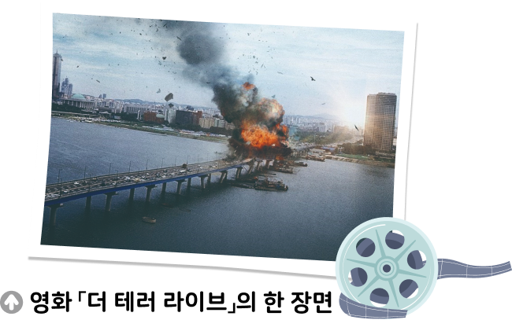
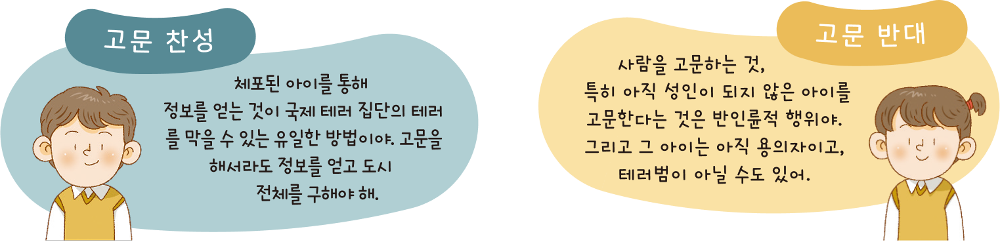

생각 열기 교실 밖 생각 수업 | 도덕적 딜레마
● 정당한 폭력이 존재할까

한가로운 주말 아침 갑자기 큰일이 벌어졌다. 국제 테러 집단이 24시간 후에 우리 도시의 가장 큰 건물을 폭파한다고 위협하는 협박 동영상이 빠른 속도로 퍼지고 있다. 그 건물이 폭발한다면 최소 100명 이상의 사상자와 도시 기능의 마비, 거대한 경제적 손해가 예상된다. 시민들은 혼란에 빠져 있다.
그러던 중 성인이 되지 않은 아이가 정보 기관에 체포되었다. 정보 기관 책임자인 이 씨의 주장에 따르면, 이 아이가 국제 테러 협박 단체와 밀접한 관련이 있는 유력한 용의자라는 것이다. 이 아이는 테러 관련 질문에 어떤 답변도 하지 않고 있다. 정보 기관 책임자인 이 씨는 체포된 아이를 고문해서라도 정보를 얻어 우리 도시에서 발생할 테러를 막을지 고민하고 있다. 더 이상 지체할 시간이 없다. 어떤 결정을 내려야 할까?
- 게오르그 린트, 『도덕적 민주적 역량: 어떻게 기를 것인가』
1단계 위의 제시문에서 문제가 되는 두 가지 갈등은 무엇인가?

2단계 만약 내가 정보 기관의 책임자인 이 씨라면 어떤 결정을 내릴지 선택해 보자.
2단계 그렇게 생각한 까닭은 무엇인가? ‘폭력’, ‘인권’ 등의 용어를 사용하여 근거를 써 보자.
| 입장 | 근거 |
|---|---|
| 고문하여 정보를 얻는다. |
최소 100여 명 이상이 테러로 인하여 목숨을 잃을 수 있는 매우 위험한 상황이고, 테러범의 ‘폭력’적인 행동을 막아야 하기 때문에 고문을 해야 한다. 아이의 ‘인권’ 문제가 생길 수 있더라도 테러범일 가능성이 있기 때문에 고문해야 한다. 테러로 인한 폭파 시간이 가까워지는 상황에서 할 수 있는 모든 방안을 생각해야 한다. |
| 고문하지 않고 다른 방법으로 정보를 찾는다. |
성인이 되지 않은 아이가 체포되었지만 아직 그 아이가 테러 집단과 관련되어 있는지 확신할 수 없다. 아이를 고문하는 것은 ‘인권’을 유린하는 행위이다. 테러로 인한 위험한 상황이지만 ‘폭력’적인 고문을 허용할 수는 없다. 테러 관련 질문에 어떤 답변도 하지 않고 있는 아이가 고문을 한다고 해서 답을 얻을 수 있을지 확실하지 않다. |